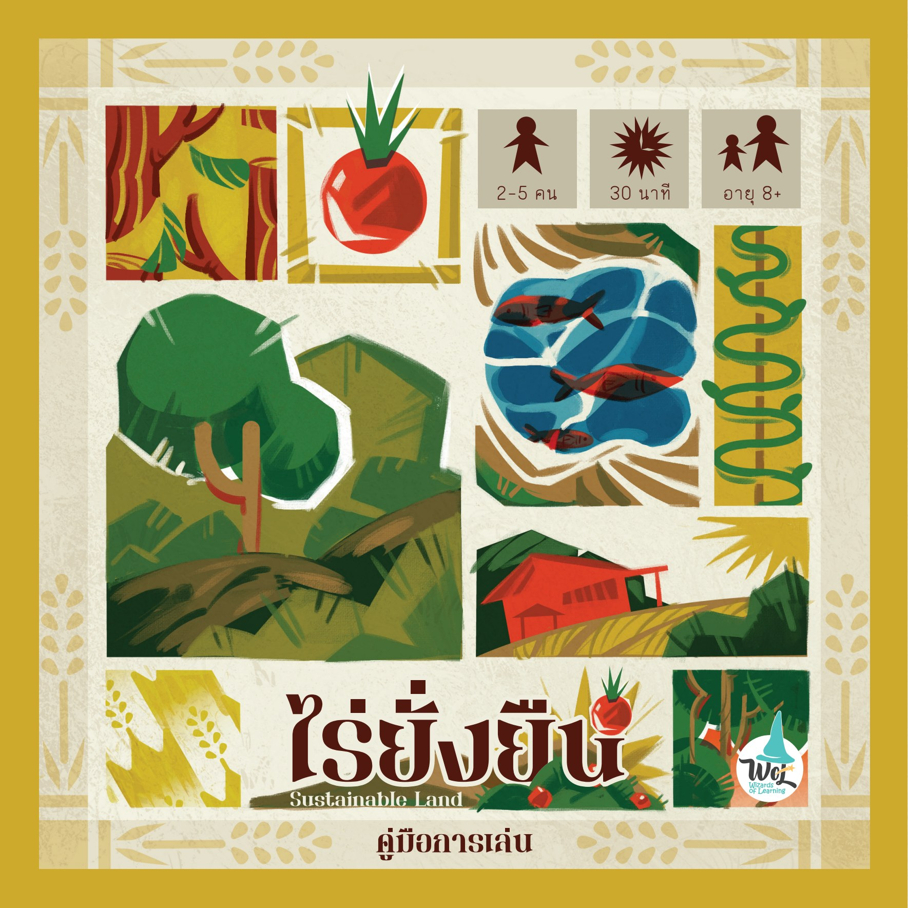
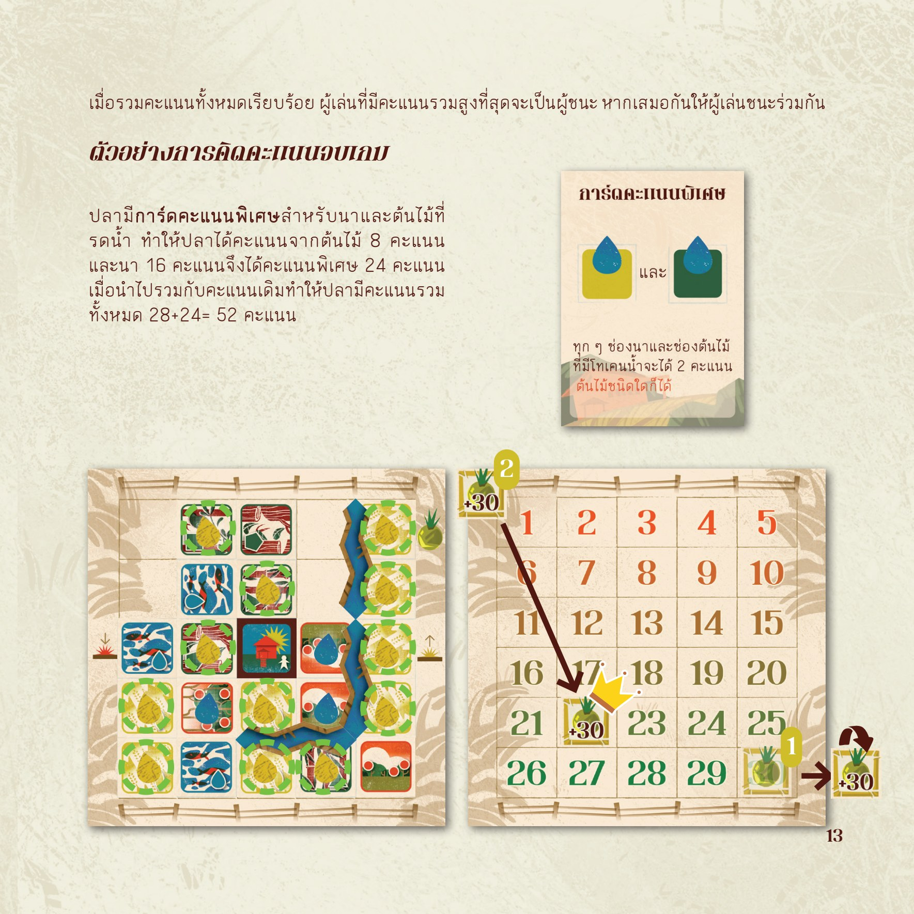
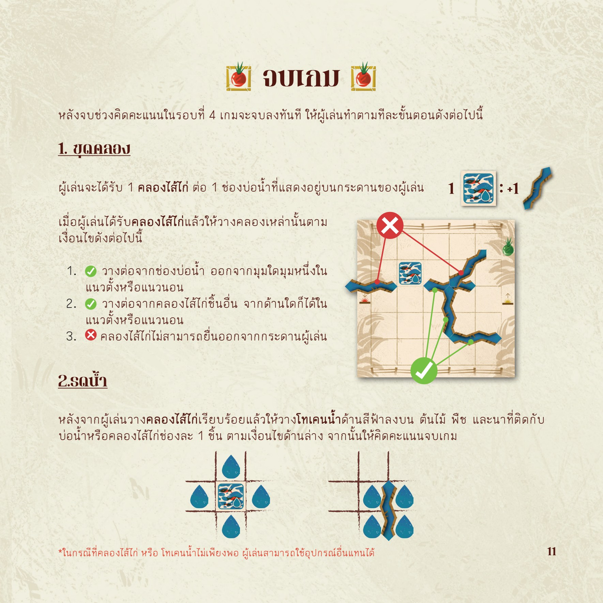

ทรัพยากรมีจำกัด
แผ่นไร่ที่อยากได้ไม่ได้มาอยู่ในมือเสมอ ผู้เล่นจึงต้องเลือก ปรับแผน และใช้พื้นที่ให้เกิดประโยชน์หลายด้าน
เกมกระดานที่ทำให้เรื่องดิน น้ำ อาหาร และการพึ่งพาตนเองกลายเป็นทางเลือกที่ผู้เล่นต้องตัดสินใจจริง เลือกแผ่นไร่ วางพืช จัดทางน้ำ รับมือเหตุการณ์ และมองเห็นผลของการออกแบบพื้นที่ตลอด 4 รอบ

4 รอบของการออกแบบไร่เรื่องการจัดการพื้นที่มักเต็มไปด้วยคำศัพท์และข้อมูล เกมช่วยย่อให้ผู้เล่นเห็นความสัมพันธ์ของน้ำ อาหาร พื้นที่ และเป้าหมาย ผ่านผลจากสิ่งที่ตัวเองเลือกวางลงบนโต๊ะ
แผ่นไร่ที่อยากได้ไม่ได้มาอยู่ในมือเสมอ ผู้เล่นจึงต้องเลือก ปรับแผน และใช้พื้นที่ให้เกิดประโยชน์หลายด้าน
คลองไส้ไก่ไม่ใช่ของตกแต่ง แต่ทำให้การจัดทางน้ำและตำแหน่งของพื้นที่ต่าง ๆ มีผลต่อการวางแผนของผู้เล่น
เมื่อจบเกม แต่ละคนมีไร่ที่หน้าตาแตกต่างกัน จึงเปรียบเทียบวิธีคิดและอธิบายเหตุผลเบื้องหลังการตัดสินใจได้ทันที

ระหว่างเกม ผู้เล่นเลือกแผ่นไร่จากตัวเลือกที่มี จัดวางบ้าน ต้นไม้ นา พืชพรรณ และทางน้ำ เพื่อสร้างพื้นที่ที่ตอบโจทย์ของตน พร้อมปรับแผนเมื่อเหตุการณ์เปลี่ยนเงื่อนไข
เกมชวนมองการจัดการที่ดินและน้ำ การปลูกพืชหลายระดับ ตลอดจนประโยชน์ด้านอาหาร การใช้สอย รายได้ และการอนุรักษ์ดินน้ำ จึงใช้เป็นสะพานเปิดบทสนทนากับแนวคิดเกษตรทฤษฎีใหม่และป่า 3 อย่าง ประโยชน์ 4 อย่างได้
เกมนี้เป็นผลงานของ Wizards of Learning มิใช่สื่อทางการหรือเอกสารรับรองจากหน่วยงานพระราชดำริ ควรใช้คู่กับข้อมูลจากแหล่งอ้างอิงทางการเมื่อต้องการศึกษารายละเอียด

มองว่าความมั่นคงทางอาหาร น้ำ พื้นที่ และการอยู่อาศัยสัมพันธ์กันอย่างไร
เลือกจากทรัพยากรที่มี คาดการณ์ผล และปรับแผนเมื่อสถานการณ์เปลี่ยน
อธิบายว่าเลือกจัดไร่แบบใด เพราะอะไร และมีทางเลือกอื่นที่เป็นไปได้หรือไม่
ใช้เปิดบทเรียนสิ่งแวดล้อม เกษตร ความมั่นคงทางอาหาร หรือการคิดเชิงระบบ
ใช้เป็นกิจกรรมที่ผู้เข้าร่วมได้ทดลองก่อนเชื่อมกับพื้นที่จริงหรือฐานเรียนรู้ในชุมชน
ใช้เปิดวงสนทนาเรื่องการจัดการทรัพยากร การพึ่งพาตนเอง และการออกแบบอนาคตร่วมกัน
Selling Sheet สรุปคุณค่า ประสบการณ์บนโต๊ะ กลุ่มที่เหมาะสม และแนวทางนำเกมไปใช้ ออกแบบให้อ่านบนจอหรือพิมพ์แจกได้ โดยไม่ใช่คู่มือกติกาฉบับเต็ม
WoL ยินดีคุยกับครู ศูนย์เรียนรู้ และหน่วยงาน เพื่อออกแบบการใช้เกมและคำถามหลังเล่นให้เหมาะกับบริบทของผู้เข้าร่วม